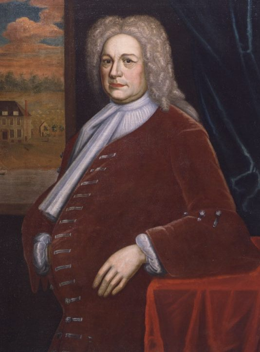

Arent Schuyler
According to family-based resources, Arent Schuyler was born in June 1662. He was the fourth son in the large family of New Netherland pioneers Philip Pieterse and Margarita Van Slichtenhorst Schuyler. He was one of eight children named (age given as 22 years) in the will filed by his parents in 1683. His father died the next year while his mother lived until 1711. Later in 1684, his widowed mother deeded him a house and lot in the second ward.
This Arent Schuyler married three times. In November 1684, he wed Jannetje Teller (daughter of Willlem Teller) at the Albany Dutch church. By 1700, six children were christened in Albany and New York. First wife Jannetie died following the birth of their last child. In December 1702, he married Swantje Van Duyckhuysen of New Jersey. She died after bearing five children. In 1724, he was in his sixties when he wed Maria Walters (daughter of Manhattan magnate Robert Walter and Catherine Leisler). Within the first two marriages, Arent appears to have fathered twelve children.
In March 1685, he filed a joint will with his then new wife, Jannetie Teller. It stated that children were expected and mentioned real and personal property. The survivor would become executor which Arent did upon the will's probate in 1689.
At that time, he was known in Albany as an Indian Trader and engaged in regular business with the new municipal government. Not all of the interactions were pleasant as in January 1687, he was cited and fined as a result of his behavior toward the firemasters that past December. In 1689, he was listed among the householders living in the second ward in Albany.
In March 1690, he was one of nine men led by his cousin Abraham Schuyler who were to serve at Crown Point and beyond. In December 1692, he was paid from the provincial treasury for bringing "Shawanee Indians" from Philadelphia [to New York]. Perhaps as a militia officer, he is said to have participated in military actions against the French in Canada during the 1690s. A decade later, he was serving as an emissary in New Jersey.
 By 1695 (perhaps earlier), he had moved his growing family to Manhattan in hope of reversing what family-based resources have described as his sagging fortunes due to his wartime absences. Identified as a merchant, "Aaron Schuyler" was made a freeman of New York City in October 1695. He prospered in business which enabled him to obtain land in New Jersey.
About 1707, he was named by his widowed mother to share equally in his parents' estate.
Following the death of his first wife, he remarried and moved to Pompton Plains, New Jersey. He maintained his house on Broadway in New York. In 1710, he acquired a large farm at New Barbados Neck, New Jersey. His family prospered when they started to mine the copper deposits on their Jersey property.
Arent Schuyler died at home in New Barbados in November 1730. The father of eleven and the patriarch of the New Jersey branch of the Schuyler family, he had lived almost sixty-eight years.
Detail adapted from an oil portrait of Arent Schuyler attributed to John Watson and dated about 1725. Collection of the New-York Historical Society. The portrait is said to have hung in Schuyler's still standing New Jersey mansion (shown in the background) for several generations. The original portrait has been reproduced by subsequent artists.